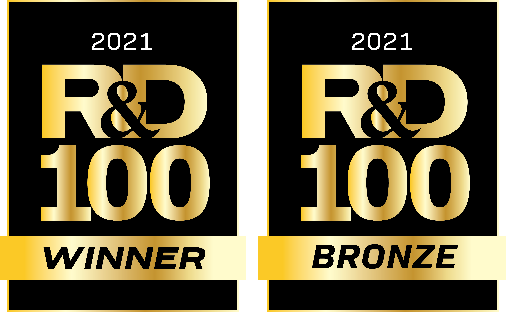

Welcome to pyQBTNs’s documentation!
{kind=link}
pyQBTNs is a Python library for boolean matrix and tensor factorization using D-Wave quantum annealers. The library includes five different boolean tensor decomposition methods making up three distinct types of tensor networks. The methodologies for pyQBTNs are introduced in [1].
pyQBTNs allows the user to specify local solvers that do not require a connection to a quantum annealer, but still solve the optimization problems the annealer would solve in the factorization algorithm. In order to use a D-Wave quantum annealer as the solver for this software, the user must set up a D-Wave configuration file. The tensor methods allow for multi-rank factorization, but the current implementation only allows single rank factorization (i.e. one rank used across the entire algorithm)
Resources
Installation
Option 1: Install using pip
pip install git+https://github.com/lanl/pyQBTNs.git
Option 2: Install from source
git clone https://github.com/lanl/pyQBTNs.git
cd pyQBTNs
conda create --name pyQBTNs python=3.7.3
source activate pyQBTNs
python setup.py install
Setup and Verify D-Wave connection
Sign up with D-Wave Leap (Make sure that you have at least 1 minute of QPU time on your free acccount).
Set up D-Wave config file (You can use either an Advantage system or a 2000Q system, but NOT a Hybrid solver).
Run an example:
cd tests
python -m unittest TestMatrixFactorizationQuantum.py
Note
For more detailed description of the D-Wave setup process see the tutorials or the example notebook on D-Wave.
Example Usage
from pyQBTNs import QBTNs
import numpy as np
qbtns = QBTNs(factorization_method="Matrix_Factorization", solver_method="classical-simulated-annealing")
p = 0.7 ### Bernoulli boolean density parameter
N1 = 10 ### Dimension 1
N2 = 10 ### Dimension 2
RANK = 3 ### Factorization rank
np.random.seed(42)
A = np.random.choice(a=[False, True], size=(N1, RANK), p=[p, 1-p])
B = np.random.choice(a=[False, True], size=(RANK, N2), p=[p, 1-p])
X = np.matmul(A, B)
print("A =", A)
print("B =", B)
print("X =", X)
print("X dimensions =", X.shape)
qbtns.fit(X, RANK)
print("Hamming distance =", qbtns.get_score())
A_prime, B_prime = qbtns.get_factors()
print("A_prime =", A_prime)
print("B_prime =", B_prime)
print("Reconstructed Matrix =", qbtns.get_reconstructed_tensor())
Prerequisites
Anaconda (Optional)
decorator==4.3.0
dwave-ocean-sdk>=3.3.0
numpy==1.19.2
tensorly>=0.4.5
sympy>=1.7.1
networkx==2.5
nimfa>=1.4.0
scikit-learn==0.24.1
matplotlib>=3.4.2
Pillow>=8.2.0
How to Cite pyQBTNs?
@MISC{Pelofske2021_pyQBTNs,
author = {E. {Pelofske} and H. {Djidjev} and D. {O'Malley} and M. E. {Eren} and B. S. {Alexandrov}},
title = {pyQBTNs},
year = {2021},
publisher = {GitHub},
journal = {GitHub repository},
doi = {10.5281/zenodo.4876527},
howpublished = {\url{https://github.com/lanl/pyQBTNs}}
}
@misc{pelofske2021boolean,
title={Boolean Hierarchical Tucker Networks on Quantum Annealers},
author={Elijah Pelofske and Georg Hahn and Daniel O'Malley and Hristo N. Djidjev and Boian S. Alexandrov},
year={2021},
eprint={2103.07399},
archivePrefix={arXiv},
primaryClass={quant-ph}
}
@misc{pelofske2021quantum,
title={Quantum Annealing Algorithms for Boolean Tensor Networks},
author={Elijah Pelofske and Georg Hahn and Daniel O'Malley and Hristo N. Djidjev and Boian S. Alexandrov},
year={2021},
eprint={2107.13659},
archivePrefix={arXiv},
primaryClass={quant-ph}
}
Copyright Notice
© 2021. Triad National Security, LLC. All rights reserved. This program was produced under U.S. Government contract 89233218CNA000001 for Los Alamos National Laboratory (LANL), which is operated by Triad National Security, LLC for the U.S. Department of Energy/National Nuclear Security Administration. All rights in the program are reserved by Triad National Security, LLC, and the U.S. Department of Energy/National Nuclear Security Administration. The Government is granted for itself and others acting on its behalf a nonexclusive, paid-up, irrevocable worldwide license in this material to reproduce, prepare derivative works, distribute copies to the public, perform publicly and display publicly, and to permit others to do so.
LANL C Number: C21027
License
Redistribution and use in source and binary forms, with or without modification, are permitted provided that the following conditions are met:
1. Redistributions of source code must retain the above copyright notice, this list of conditions and the following disclaimer.
2. Redistributions in binary form must reproduce the above copyright notice, this list of conditions and the following disclaimer in the documentation and/or other materials provided with the distribution.
3. Neither the name of the copyright holder nor the names of its contributors may be used to endorse or promote products derived from this software without specific prior written permission.
THIS SOFTWARE IS PROVIDED BY THE COPYRIGHT HOLDERS AND CONTRIBUTORS “AS IS” AND ANY EXPRESS OR IMPLIED WARRANTIES, INCLUDING, BUT NOT LIMITED TO, THE IMPLIED WARRANTIES OF MERCHANTABILITY AND FITNESS FOR A PARTICULAR PURPOSE ARE DISCLAIMED. IN NO EVENT SHALL THE COPYRIGHT HOLDER OR CONTRIBUTORS BE LIABLE FOR ANY DIRECT, INDIRECT, INCIDENTAL, SPECIAL, EXEMPLARY, OR CONSEQUENTIAL DAMAGES (INCLUDING, BUT NOT LIMITED TO, PROCUREMENT OF SUBSTITUTE GOODS OR SERVICES; LOSS OF USE, DATA, OR PROFITS; OR BUSINESS INTERRUPTION) HOWEVER CAUSED AND ON ANY THEORY OF LIABILITY, WHETHER IN CONTRACT, STRICT LIABILITY, OR TORT (INCLUDING NEGLIGENCE OR OTHERWISE) ARISING IN ANY WAY OUT OF THE USE OF THIS SOFTWARE, EVEN IF ADVISED OF THE POSSIBILITY OF SUCH DAMAGE.